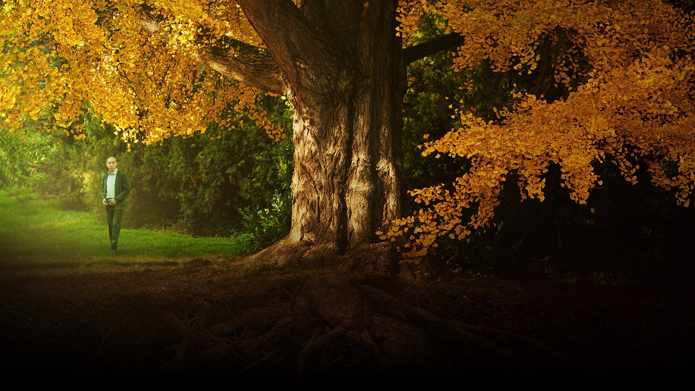
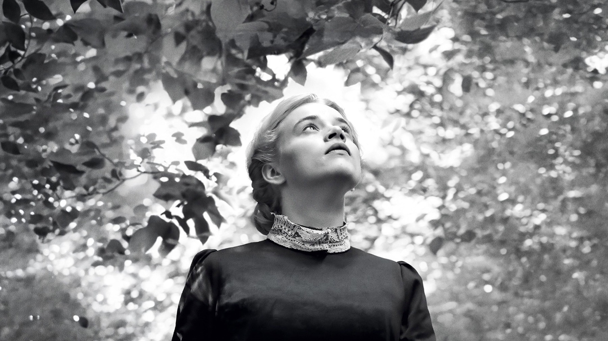
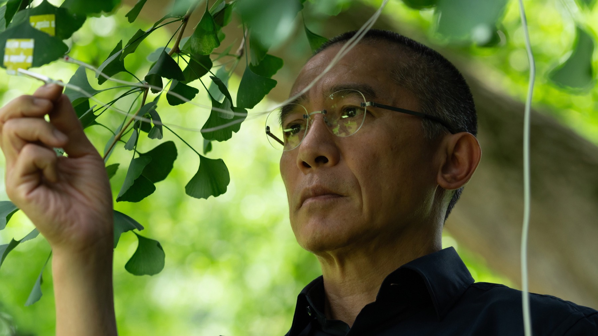

Silent Friend
Un albero, tre epoche e un Tony Leung in stato di grazia: il film più insolito dell'anno è un invito a guardare il mondo da un'altra prospettiva
Il protagonista di Silent Friend non parla, non si muove e ha più di un secolo di vita. È un ginkgo biloba che sta al centro del giardino botanico di Marburgo, vecchia città universitaria tedesca, e intorno a lui la regista ungherese Ildikó Enyedi ha costruito uno dei film più spiazzanti e luminosi degli ultimi anni. Presentato in concorso alla Mostra di Venezia 2025, arrivato nelle sale italiane il 3 settembre con Movies Inspired, è il tipo di opera che si incontra raramente: un film sulla scienza raccontato come una poesia.
La critica lo ha accolto con un entusiasmo quasi unanime: a ottobre 2026 ha il 94% di recensioni positive su Rotten Tomatoes e una media di 90 su 100 su Metacritic, la fascia del «plauso universale». A Venezia ha vinto il premio FIPRESCI della critica internazionale e il Premio Marcello Mastroianni alla giovane interprete Luna Wedler.
Di cosa parla Silent Friend?
Tre storie, tre epoche, un solo testimone. Nel 1908 Grete, interpretata da Wedler, è tra le prime donne a chiedere di studiare all'università e deve conquistarsi un posto in un mondo accademico che non la vuole. Nel 1972 Hannes (Enzo Brumm), uno studente solitario, si ritrova accanto al geranio di una compagna di casa, collegato a un sensore che ne registra le reazioni. Nel 2020 il neuroscienziato di Hong Kong Tony Wong, interpretato da Tony Leung, arriva a Marburgo per le sue ricerche proprio mentre la pandemia svuota il campus, e finisce per concentrare i suoi studi proprio sul ginkgo. Léa Seydoux, in un ruolo piccolo ma decisivo, è la botanica francese Alice Sauvage.
Le tre vicende non si intrecciano nel modo in cui ci si aspetterebbe da un film corale. Si sfiorano, si rispondono a distanza, e ruotano tutte intorno alla stessa domanda: che cosa significa davvero percepire il mondo, e quanto siamo capaci di accorgerci di ciò che non ci somiglia?

Tre epoche, tre pellicole
L'idea visiva più bella del film è anche la più semplice. Il direttore della fotografia Gergely Pálos ha girato ogni epoca con un supporto diverso: un bianco e nero in 35 mm per il 1908, il colore granuloso del 16 mm per il 1972, il digitale per il presente. Non è un vezzo da cinefili: ogni formato restituisce il modo in cui quel tempo guardava le cose, e il passaggio dall'uno all'altro diventa parte del racconto.
C'è poi una scelta di sguardo che quasi tutte le recensioni sottolineano. Jonathan Romney su Screen Daily scrive che Pálos riprende le piante da ogni angolazione e distanza immaginabile; Savina Petkova su The Film Stage nota che l'albero viene filmato con l'intimità dei primi piani di solito riservati ai volti umani. Rami e foglie occupano l'inquadratura alla pari dei personaggi, ribaltando la consueta gerarchia del cinema. Il risultato è un film che toglie l'essere umano dal centro della scena, con una dolcezza disarmante.
Come si ascolta una pianta?
Il cuore del film è una domanda quasi infantile, presa però maledettamente sul serio. Ognuna delle tre storie prova a entrare in contatto con il mondo vegetale usando gli strumenti della propria epoca: la fotografia chimica, lenta e paziente; i sensori elettronici collegati a un geranio, nel pieno della controcultura degli anni Settanta; gli apparecchi della ricerca neuroscientifica contemporanea. È, in sostanza, un film su come provare a decifrare il «sentire» di un essere che non comunica come noi.
Ed è qui che Silent Friend trova la sua voce più personale. Non c'è nessuna lezione di ecologia, nessun sermone sul pianeta da salvare: c'è la curiosità, contagiosa, di persone che a un certo punto si accorgono di aver sempre guardato nella direzione sbagliata. Enyedi, in una dichiarazione riportata da Cinemaniaci, dice di non amare lo spettacolo al cinema e di preferire ciò che resta nascosto: il suo film è la dimostrazione pratica di quella frase.
Dopo la fauna di Testről és lélekről, Enyedi sceglie la flora. E ci chiede di rallentare.
Tony Leung e gli altri

Vedere Tony Leung protagonista di una coproduzione europea, la prima della sua carriera, ha già qualcosa di speciale. Chi lo ha amato nei film di Wong Kar-wai sa quanto sia bravo a far parlare gli sguardi, e un attore così era la scelta ideale per un film costruito su silenzi e sospensioni. Romney parla di una prova quieta, carismatica e solenne, ed è esattamente così: Leung lavora per sottrazione, con quella capacità tutta sua di riempire il silenzio, e regala al segmento contemporaneo una malinconia mai esibita. Luna Wedler, premiata a Venezia, dà a Grete una determinazione nervosa e moderna, mentre Enzo Brumm rende credibile la timidezza del 1972 senza mai scivolare nella macchietta.
Per Enyedi è un ritorno attesissimo. La regista aveva vinto l'Orso d'oro a Berlino nel 2017 con Testről és lélekről (Corpo e anima), poi candidato all'Oscar come miglior film straniero: una storia d'amore tra due colleghi di un mattatoio che, senza saperlo, fanno ogni notte lo stesso sogno, in cui sono una coppia di cervi. Silent Friend ne è in qualche modo il fratello vegetale.
I limiti di un film che non ha fretta
Sarebbe disonesto nascondere che Silent Friend chiede molto allo spettatore. Dura quasi due ore e mezza e procede con il passo lento e contemplativo di chi osserva crescere qualcosa. Romney, che pure lo apprezza, fa notare che le tre storie non si chiudono davvero sul piano narrativo, preferendo lasciare dietro di sé una scia di idee. Petkova descrive l'effetto come uno stato di trance, che funziona solo se si accetta la prospettiva insolita del film.
Anche in Italia la critica è entusiasta ma non cieca: MYmovies, pur parlando di una sfida vinta, gli assegna una valutazione più prudente rispetto alla media della stampa, mentre altre recensioni italiane lo definiscono delicato, bizzarro e profondamente affascinante. È, in fondo, il ritratto più onesto di un film che non cerca il consenso di tutti.
Vale la pena vederlo?
Assolutamente sì, se siete disposti a lasciarvi portare. In un anno dominato da film enormi e rumorosi, Silent Friend è un piccolo atto di resistenza: un'opera che si prende il suo tempo, che mescola botanica, neuroscienze e storia del costume, e che riesce a commuovere parlando di un albero. Cercatelo nelle sale d'essai finché è in programmazione: è uno di quei titoli che, sul grande schermo, guadagnano tantissimo.
Un film raro, delicato e spiazzante. Se da un lato la sua lentezza e le storie lasciate aperte possono mettere alla prova, dall'altro Enyedi firma un'opera di rara bellezza visiva, con un Tony Leung magnifico. Per noi, uno dei film d'autore più originali dell'anno.
Domande frequenti
Di cosa parla Silent Friend?
Di tre persone che, in tre epoche diverse, provano a capire il mondo vegetale osservando lo stesso albero del giardino botanico di Marburgo.
Quanto dura Silent Friend?
Circa due ore e mezza (147 minuti).
Silent Friend ha vinto premi?
A Venezia 2025 ha vinto il premio FIPRESCI e il Premio Marcello Mastroianni per Luna Wedler.
Fonti consultate (9)
- Wikipedia – Silent Friend
- Wikipedia – On Body and Soul (Corpo e anima)
- MYmovies – Silent Friend (scheda e recensione)
- Moviestruckers – Silent Friend, recensione
- Screen Daily – Silent Friend review (Jonathan Romney)
- The Film Stage – Silent Friend review (Savina Petkova)
- ComingSoon.it – Silent Friend
- Roma Report – Silent Friend
- Cinemaniaci – Enyedi torna con Tony Leung